In this codelab, you'll experience the complete lifecycle of event-driven architecture design and deployment using Solace Event Portal and PubSub+ Cloud. You'll learn how to:
- Register for a Solace Cloud trial account
- Provision a PubSub+ Cloud broker service
- Configure environment and modeled event mesh
- Design an EDA model using the AI Design Assistant in Event Portal
- Create and manage application domains
- Design application flows with events and topics
- Customise Event Portal with custom icons and logos
- Configure Runtime Data Policies (RDPs)
- Push configurations from Event Portal to live brokers
- Test end-to-end message flows with REST consumers
- Summmarize key takeaways and next steps
What You'll Need
- A valid email address for registration
- A modern web browser (Chrome, Firefox, Safari, or Edge)
- Basic understanding of event-driven architecture concepts
- Access to requestcatcher.com for testing REST delivery
What You'll Build
By the end of this codelab, you'll have:
- A fully configured PubSub+ Cloud broker
- An Event Portal design with application domains
- Event schemas and topic hierarchies
- Application flows showing event producers and consumers
- REST Delivery Points configured with queues
- A working end-to-end event flow delivering messages to a REST API
Create Your Account
- Navigate to https://console.solace.cloud/
- Click Sign Up
- Fill in the registration form:
- Email address
- First and last name
- Company name
- Role
- Reason for trial : Become Solace certified
- Password (must meet complexity requirements)
- Accept the Terms of Service
- Click Sign up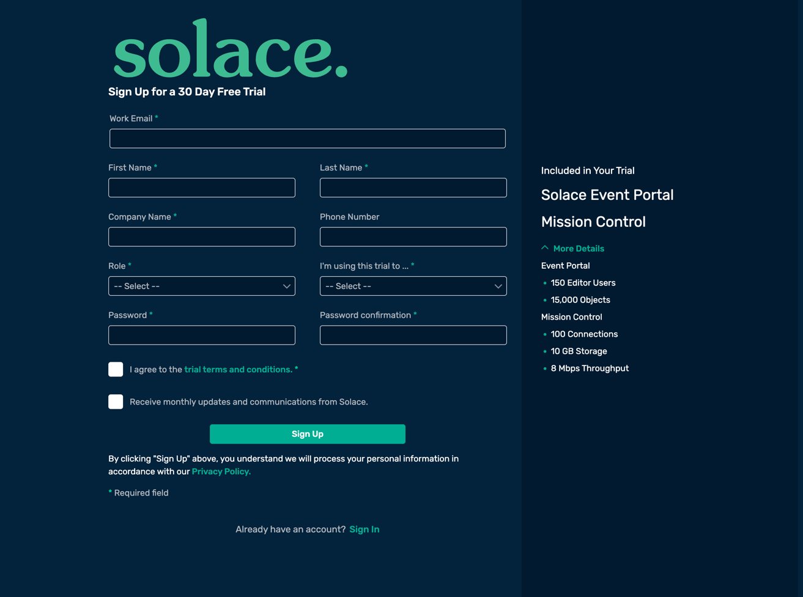
- A verification email will be sent to your provided email address

Verify Your Email
- Check your email inbox for a verification message from Solace
- Click the Verify Email link in the message
- You'll be redirected to the Solace Cloud Console

Navigate to Cluster Manager
- In the Solace Cloud Console, click Cluster Manager in the left navigation

- Click Create Service (or the + button if you have existing services)

Configure Your Service
- Fill in the service configuration details:
- Name : Choose a concise name (e.g.,
ep-codelab) - Environment : Leave as Default
- Cloud : Choose your preferred cloud provider (AWS, Azure, or GCP)
- Region : Select a region closest to your location
- Broker Release : Leave as default (latest stable)
- Service Type : Select Developer (free tier) 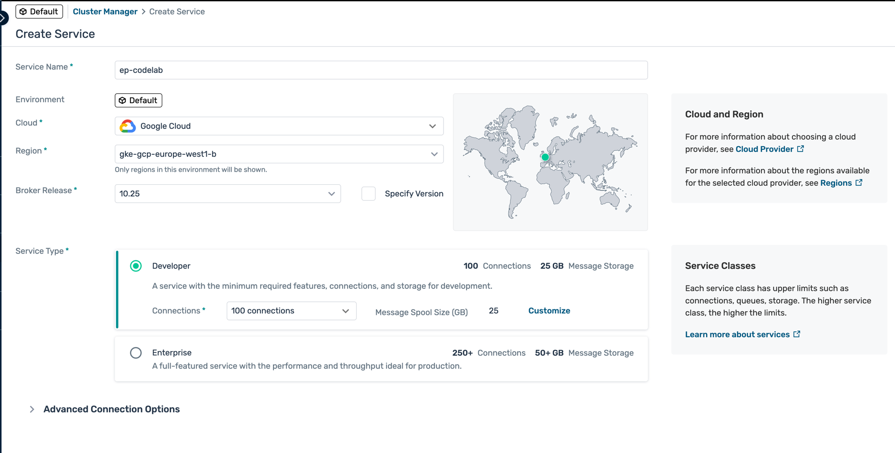
- Name : Choose a concise name (e.g.,
- Click Create Service
Wait for Provisioning
- The service will take 3-5 minutes to provision
- Status will show as Creating...

- Once complete, the broker details page will load

Explore Your Broker
- Navigate through the tabs:
- Connect: Connection details and credentials

- Manage: Service management and configuration

- Connect: Connection details and credentials
Environment Setup
Environments in Solace Cloud represent the runtime environments within your organisation. For example, you may have
- Multiple development environments
- Multiple testing environments
- A Staging or Pre-Production
- A Production environment
- In the Solace Cloud Console, navigate to the Environments tab

- In the Environments tab, there is a default environment created for you called "Default"

- Click on the ... buttons next to the Default environment and select Runtime Configuration Settings

- Click on the Auto on Promotion radio button to enable automatic promotion of configuration changes from Event Portal to the associated PubSub+ Cloud broker

- Click Save to save the changes
- Optional: You can edit some of the environment details like name and description by clicking on the Edit button under the ... menu

Modeled Event Mesh Setup
A modeled event mesh represents an actual event mesh or event flow operating in a specific runtime environment. Modeled event meshes help you define and visualize event flows between publishing and subscribing applications within your event-driven architecture (EDA).
- In the Solace Cloud Console, navigate to the Runtime Event Manager tab 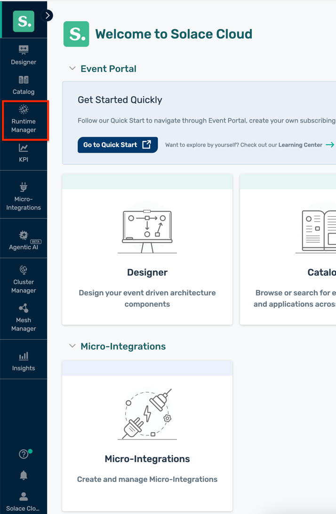
- Click on the Create Modeled Event Mesh button

- Fill in the details for the modeled event mesh:
- Name :
Dev-Mesh - Type :
Solace - Description :
Development Modeled Event Mesh - Environment : Select
Defaultenvironment
- Name :
- Click Create to create the modeled event mesh 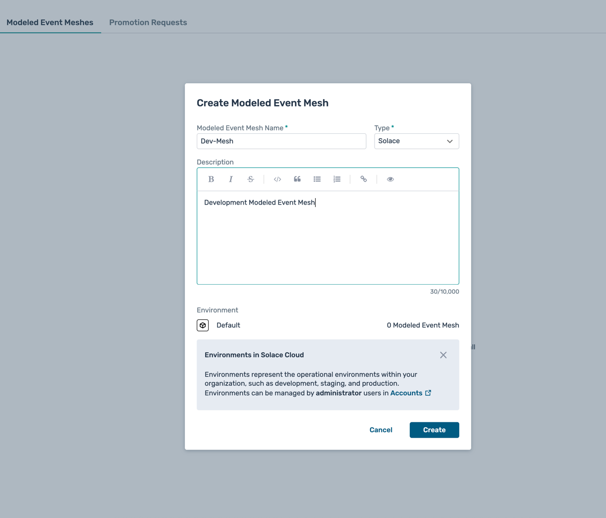
- You will see the newly created modeled event mesh in the list

- Click on the modeled event mesh name to view its details
- Under the Event Broker Connections tab, click on Connect Event Broker

- Select the PubSub+ Cloud broker you created earlier (e.g.,
ep-codelab) and click Add
- You should now see the broker connection listed under the Event Broker Connections tab

Event Portal is a cloud-based event management tool that enables you to discover, create, design, share, manage, and govern the assets and resources in your event-driven architecture (EDA). It makes developing and deploying event-driven applications and integration easier for developers and architects.
Navigate to the Event Portal
- From the Solace Cloud Console, click Designer in the left navigation 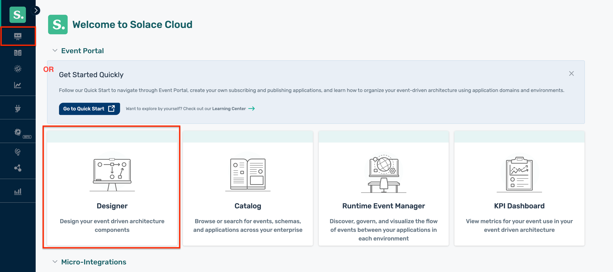
- This will open the Designer view of the Event Portal, where you can create and manage your event-driven architecture designs.

Design with the AI Design Assistant
- In the Event Portal Designer, click on the AI Design Assistant button located in the top right corner of the screen.

- In the AI Design Assistant dialog, enter :
- Your company name :
Walmart - A detailed description of the solution you want to design. You can use the below description:
- Create a retail point-of-sale system with the following:
- A POS application that publishes order events when customers complete purchases
- An inventory service that subscribes to order events and updates stock levels
- A notification service that sends order confirmations
- Events should include: order created, order completed, inventory updated, and notification sent
- Use a hierarchical topic structure with retail as the root domain
- Create a retail point-of-sale system with the following:
- You can choose to generate the design in a single application domain or multiple domains.
- Click Create Application Domains to proceed to the next step

- Your company name :
- The AI Design Assistant will generate the application domains and present it for your review. Click Create Applications to proceed to the next step

- The AI Design Assistant will generate the applications for each domain and present it for your review. Click Create Events to proceed to the next step 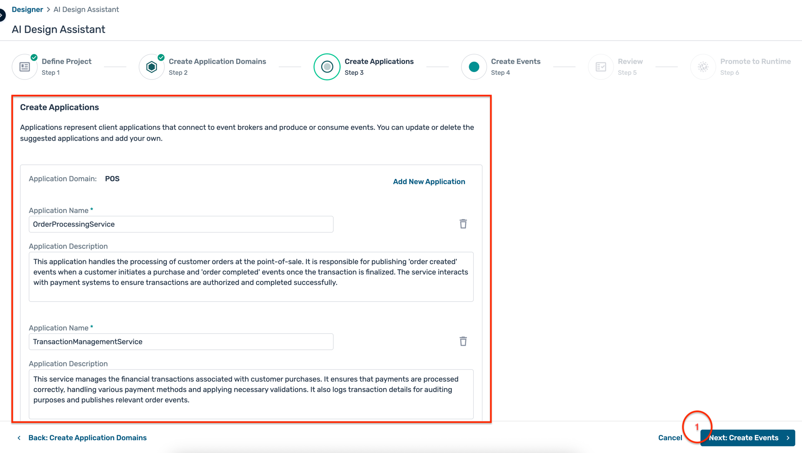
- The AI Design Assistant will generate the events for each application and present it for your review. Click **Review ** to proceed to the next step

- You can also promote the design directly to the modeled event mesh you created earlier by selecting the checkbox * Promote Applications and Events to Runtime Event Manager*. Click on **Create Assets** to complete the design process.

- Once the design is created, you will see the application domains, applications, and events listed in the Event Portal Designer. 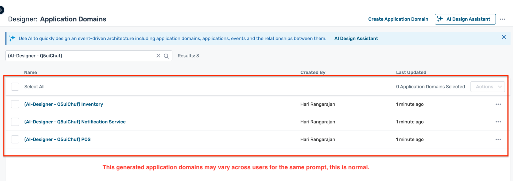
- The designer view within each application domain will show the applications, events, and their relationships. 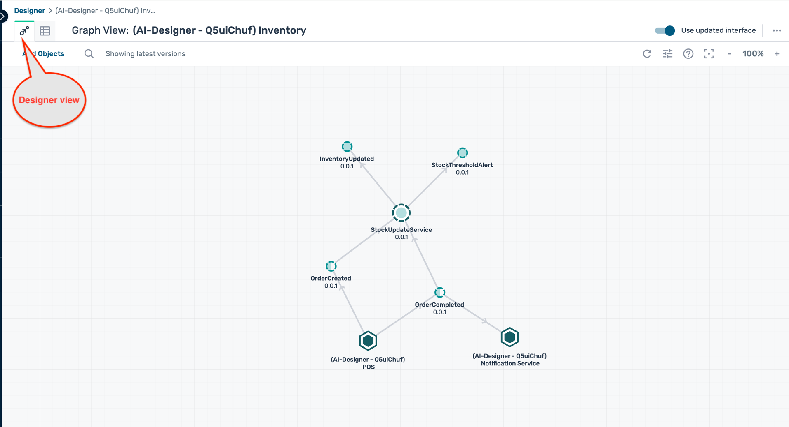
- In the Applications tab, you can see the list of applications created by the AI Design Assistant. 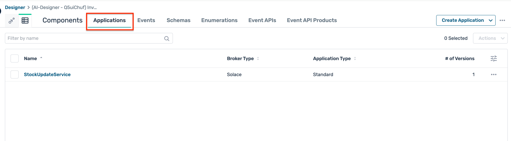 a. Within each application, you can view the application details, versions, the events it produces and consumes, the queues it has configured and their deployment statuses.


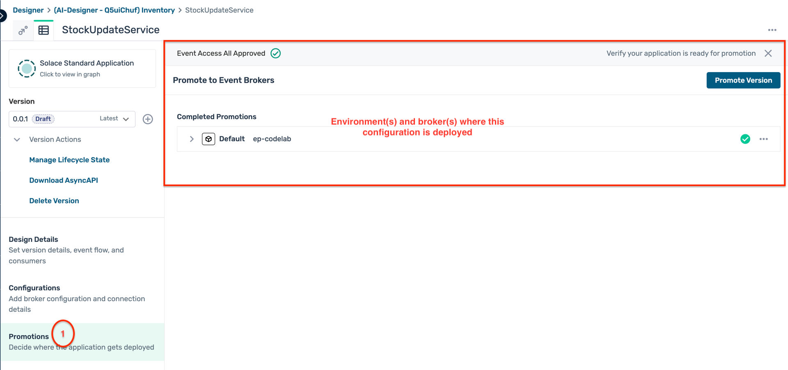 \ - In the Events tab, you can see the list of events created by the AI Design Assistant. 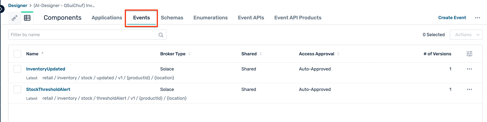 a. Within each event, you can view the event details, versions, associated payload schema, and the applications that produce and consume the event. 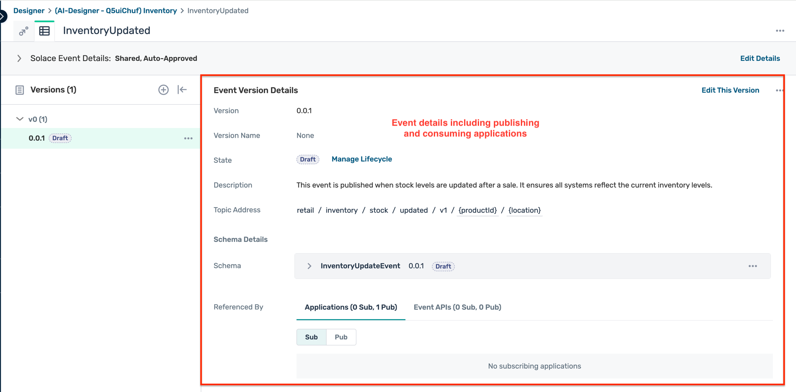 b. You can also view the topic address where the event should be published 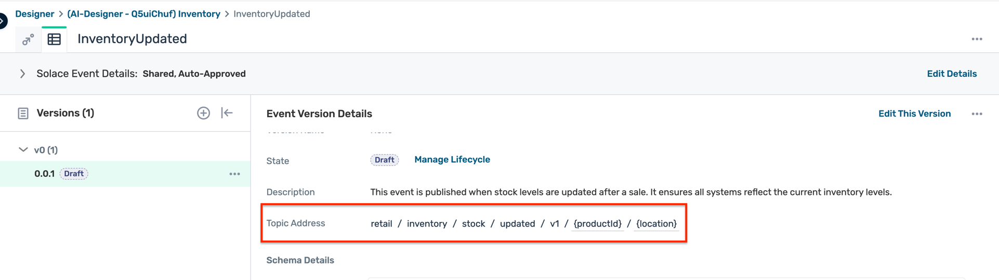
- In the Schemas tab, you can see the list of payload schemas created by the AI Design Assistant.
 a. Within each schema, you can view the schema details, versions, and the events associated with the schema. 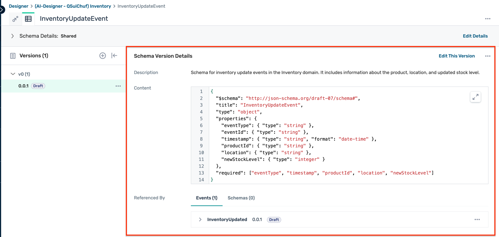 b. You can also view the schema definition in JSON format.
a. Within each schema, you can view the schema details, versions, and the events associated with the schema. 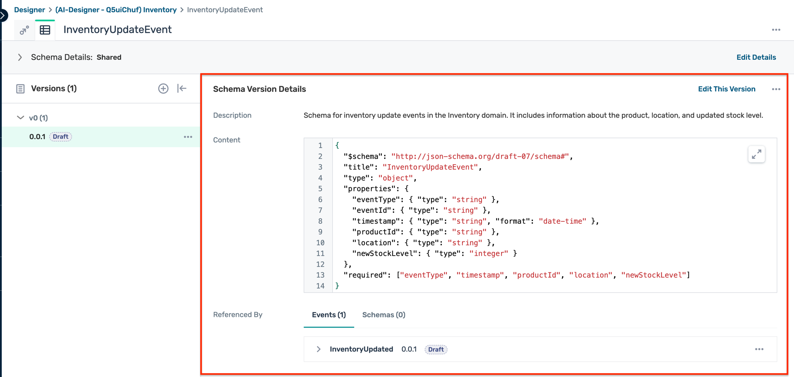 b. You can also view the schema definition in JSON format. - Repeat the above steps to explore the other application domains created by the AI Design Assistant.
Customise Design with Icons and Logos
In the Event Portal, you can customise the appearance of your applications by changing their icons and logos. This helps in visually distinguishing different applications within your event-driven architecture design. It also helps in branding your applications according to your organisation's identity and makes it easier for team members to recognize and navigate through the applications in the Event Portal.
- Navigate to any of the application domains created by the AI Design Assistant e.g. Notification Service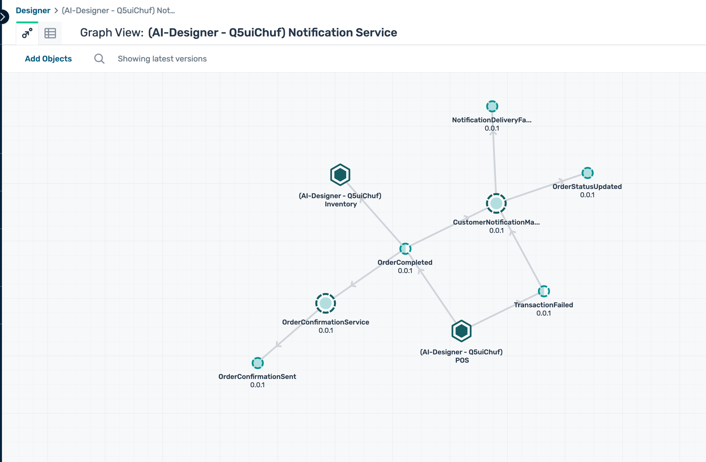
- Click on any of the applications within the domain e.g. OrderConfirmationService

- In the details panel on the right, click on the ... buttons and then the Edit Appearance button 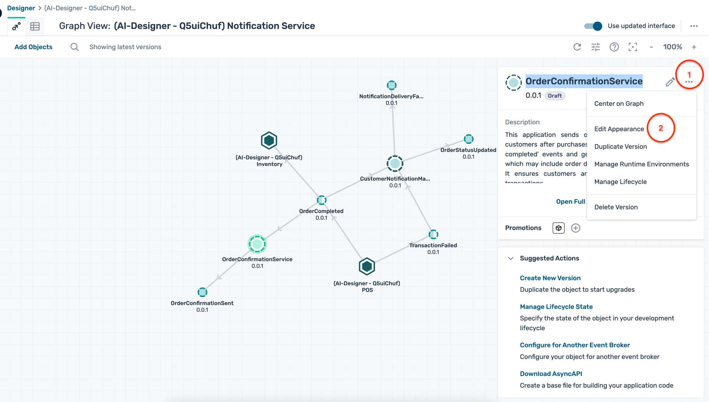
- This opens the appearance customisation dialogue where you can change the icon, logo, and accent colour of the application


- You can do the same for other applications within the application domain
- You can also customise the colour of the events within the application domain by a. Click on any event b. In the details panel on the right, click on the ... buttons and then the Edit Appearance button c. Select an accent color and click Save
Create a new event
- In the Event Portal Designer, navigate to an application domain where you want to create a new event e.g. Inventory

- Right-click on the canvas and select Create Solace Event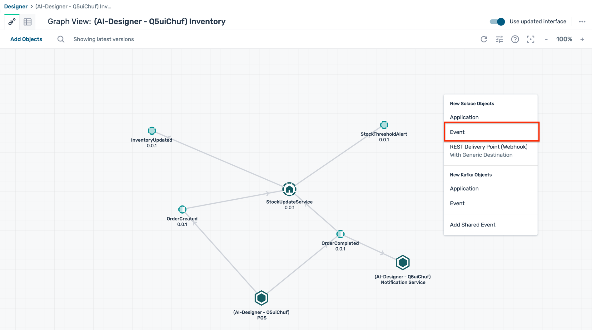
- Fill in the event details:
- Name :
OutOfStockAlert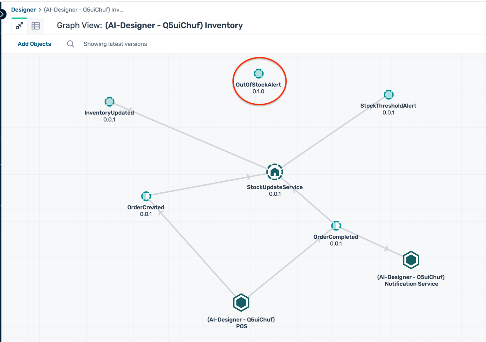
- Name :
- Click on the newly created event to open its details panel and click Edit Full Details

- Fill in the full event details:
- Description :
Event published when an item is out of stock - Topic Address :
retail/inventory/stock/outofstockalert/v1/{productId}/{location} - Schema : Create a new schema using the Quick Create Schema button with a simple JSON schema defining the payload structure
- Click Save to save the event details
- Description :


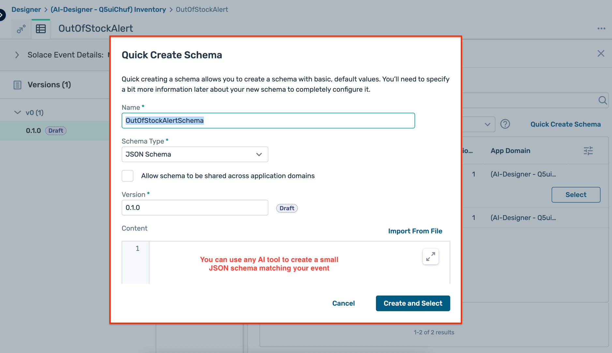 6. Once the event is created, you will see it listed in the Events tab of the application domain as well as in the designer view  7. You can also view the newly created schema in the Schemas tab of the application domain
7. You can also view the newly created schema in the Schemas tab of the application domain  8. Go back to the designer view of the application domain and hover over the application that will produce the new event e.g. StockUpdateService
8. Go back to the designer view of the application domain and hover over the application that will produce the new event e.g. StockUpdateService 9. Pull the Produces Event handle (small arrow on the application) and drag it to the newly created event to create a producing relationship 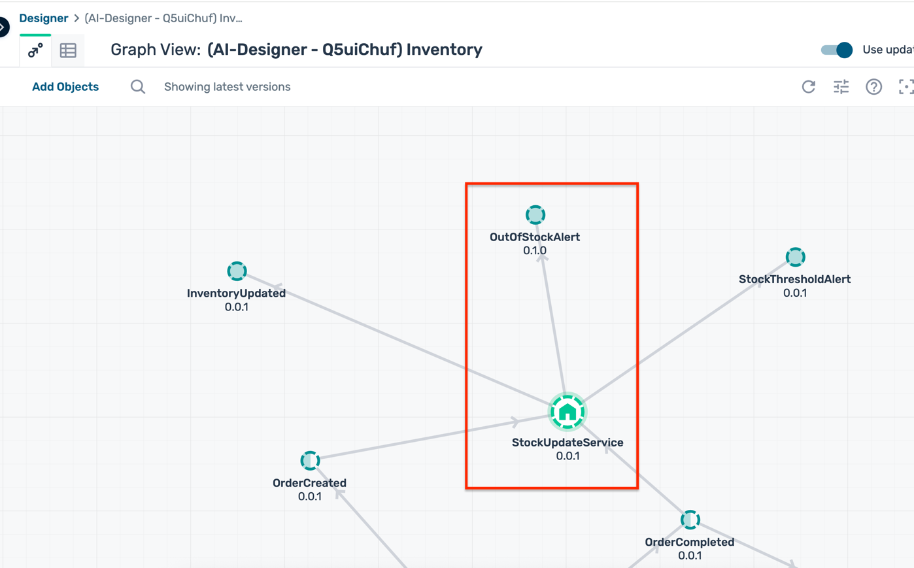
9. Pull the Produces Event handle (small arrow on the application) and drag it to the newly created event to create a producing relationship 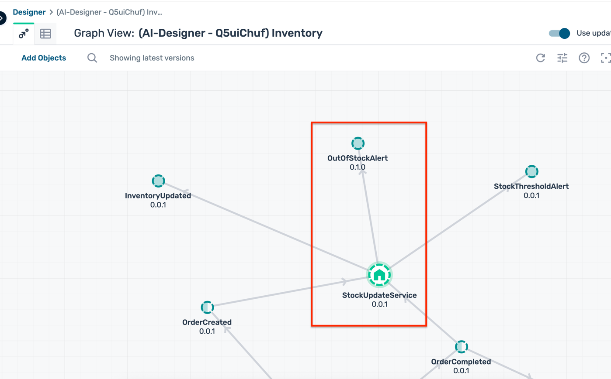
Now that you have updated your original design with a new event and established a producing relationship, you need to create a consuming application that will forward the event messages to a REST endpoint using a REST Delivery Point ( RDP). You will also push the updated design to the PubSub+ Cloud broker.
Create a consuming application
- In the Event Portal Designer, navigate to the same application domain where you created the new event e.g. Inventory
- Right-click on the canvas and select REST Delivery Point (Webhook)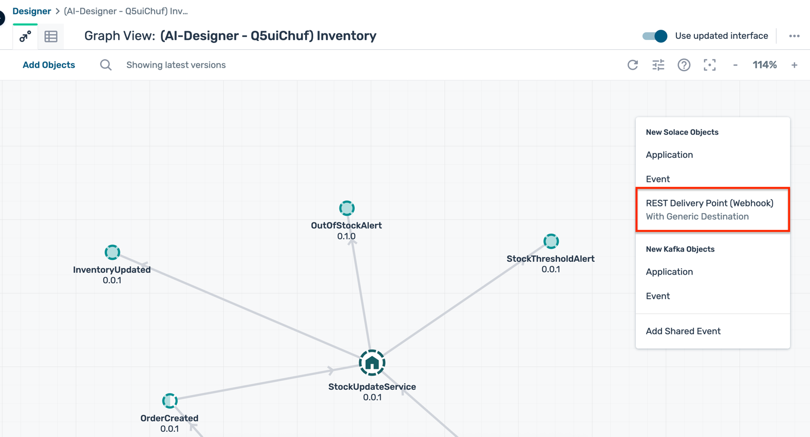
- Fill in the application details:
- Name :
OutOfStockAlertRDP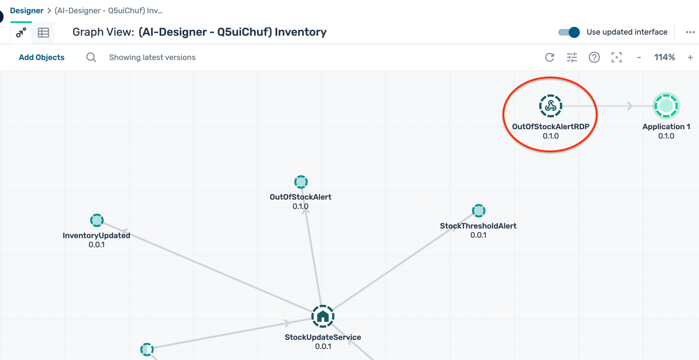
- Name :
- This RDP application will be linked to another application which denotes the REST API that will effectively receive the messages. You can rename this linked application to something more meaningful like
StockManagementAPI
- Hover over the newly created event and pull the Consumes Event handle (small arrow on the event) and drag it to the RDP application to create a consuming relationship
 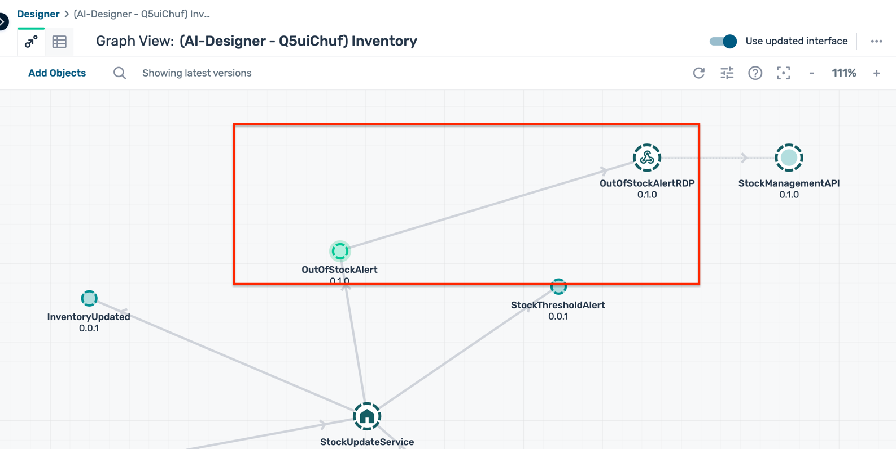
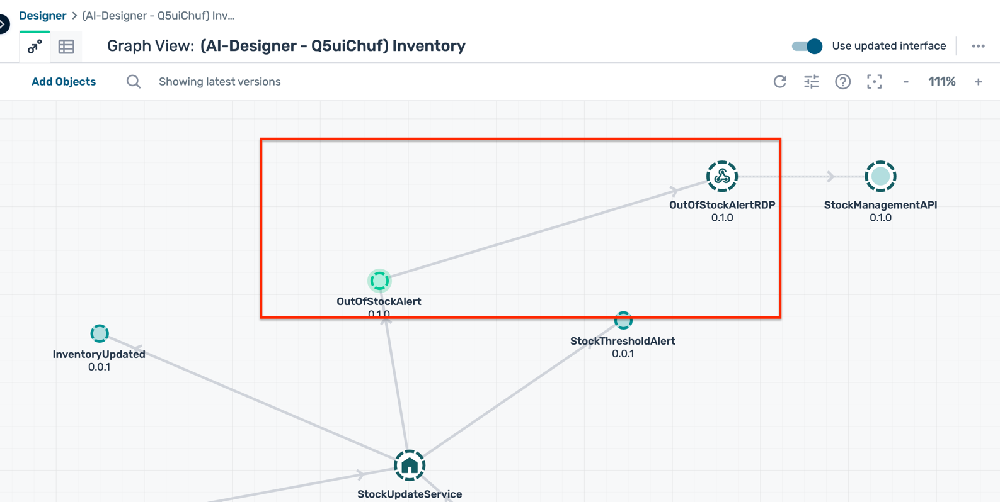
Configure a REST API endpoint
- Quickly set up a request catcher service to act as the REST endpoint that will receive the messages from the RDP. a. Navigate to https://requestcatcher.com/
b. Enter the name of the linked application from above e.g. StockManagementAPI in the input provided and click on the button Get Started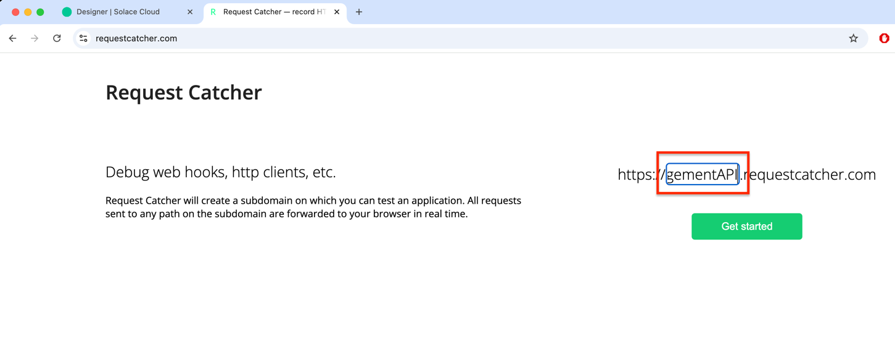 c. This creates a unique endpoint URL for you to use in the RDP configuration later. Copy this URL and save it for later use. 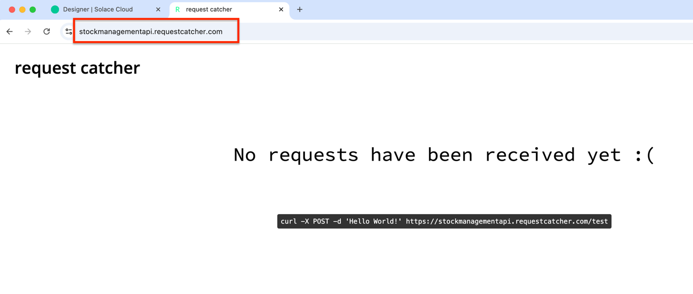
Configure RDP and push configuration to broker
- Click on the newly created RDP application to open its details panel and click Open Full Application Details

- In the application details page, you can review the application information, associated events, and queues. Click on the Advanced Subscription Setup tab to view the queues associated with the RDP application.


- Click on the Configurations tab on the left to create the RDP configuration, and then click on the Create Configuration button. 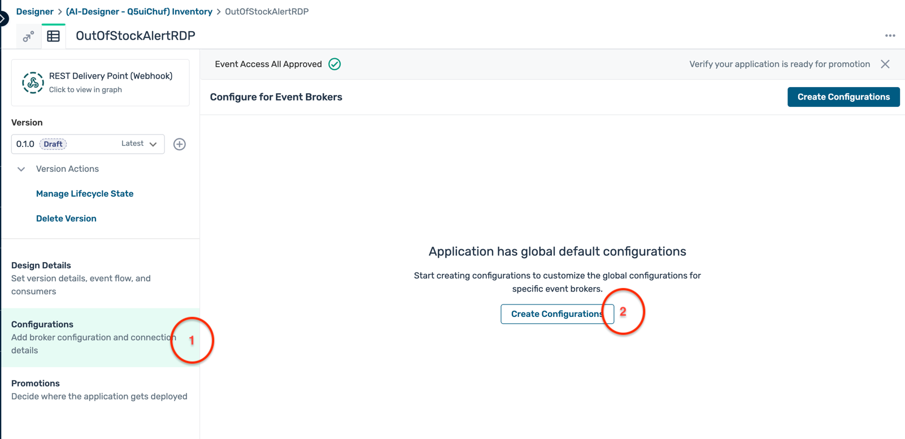
- In the RDP Configuration dialogue box:a. Broker selection : Select the default environment and broker that you created earlier and click on the button Next:Define Event Handling
 b. Define Event Handling :
b. Define Event Handling :- Queue Name : Keep the pre-filled value as is
- Queue Configuration : Keep the default selection as is
- Request Target : Update the value to
/test - Click on the button Next:Define Destination

- RDP Name : Keep the pre-filled value as is
- Destination Configuration Type : Keep the default selection of
Generic Destinationas is - Authentication Scheme : Select the value
Nonefrom the dropdown - Remote Host : Enter the URL that you configured in the previous step. Make sure to remove the protocol and the ending
/. For e.g.stockmanagementapi.requestcatcher.com - Remote Port : Enter the value
443 - TLS Enabled : Keep the default selection of
TLS Enabledas is - Click on the button Next:Review

- Review the RDP configuration details


- Click on the button Start Promotion to deploy the configuration to the selected PubSub+ Cloud broker
- Configuration Promotion:
- Click on the Preview Promotion button to review the promotion details

- In the preview screen, click on the individual sections to review the changes that will be applied to the broker

- Once reviewed, click on the Promote button to initiate the promotion
- You can see the promotion status in the Promotions tab of the application details page

- Click on the Preview Promotion button to review the promotion details
Till now, we have :
- Provisioned a PubSub+ Cloud broker associated with an environment and linked it to a modeled event mesh
- Designed an event-driven architecture using the AI Design Assistant in Event Portal
- Created a new event and application flow
- Configured a REST Delivery Point (RDP) to forward event messages to a REST endpoint
- Pushed the updated design to the PubSub+ Cloud broker
Now, its time to test a single message flow from a producer application to the REST endpoint via the PubSub+ Cloud broker.
Create a test message
- In the Event Portal Designer, navigate to the application domain where you created the new event e.g. Inventory
- Click on the Schemas tab and open the schema associated with the new event e.g. OutOfStockAlertSchema

- Copy the JSON schema definition to use it for creating a test message 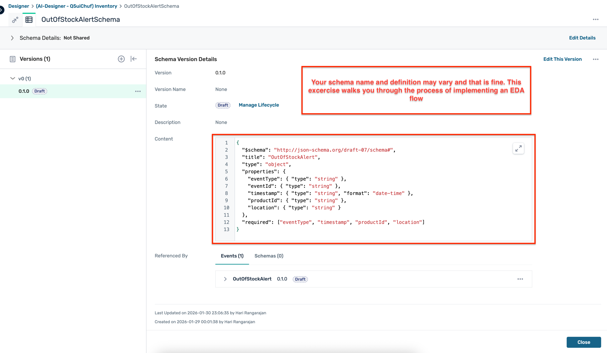
- Use the copied schema to create a sample JSON message. You can use any AI tool to generate a sample JSON object based on the schema.
- This generated JSON object will be used as the payload for the test message to be sent to the PubSub+ Cloud broker.
Send a test message
- In the Solace Cloud Console, navigate to the Cluster Manager tab and select the PubSub+ Cloud broker you provisioned earlier.

- On the broker details page, click on the Connect tab to get the connection details. 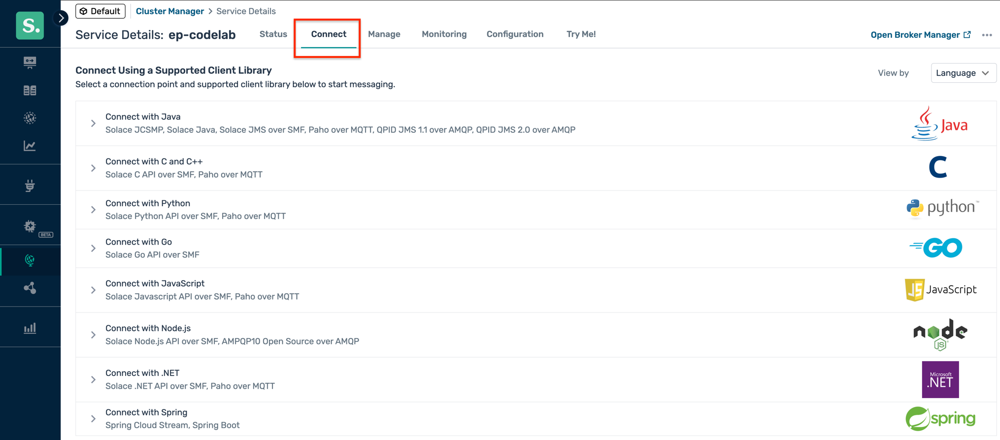
- Copy the password value for the solace-cloud-client username.

- Click on the Open Broker Manager link in the top right corner to open the PubSub+ Broker Manager in a new tab.

- In the PubSub+ Broker Manager, navigate to the Try-Me tab on the left navigation.

- In the Try-Me tab, on the Publisher side, fill in the copied password for the solace-cloud-client username and click Connect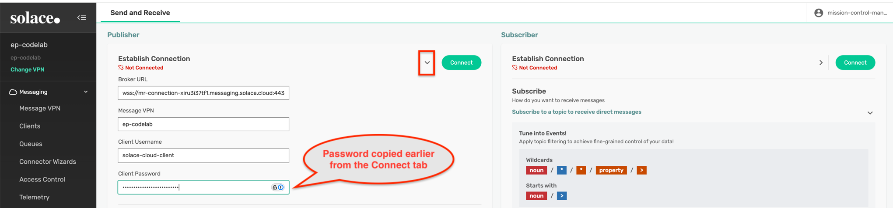
- In the Topic field, enter the topic address of the new event e.g.
retail/inventory/stock/outofstockalert/v1/SKU-12345/NL-WH-01 - In the Message Payload field, paste the sample JSON message you created earlier.

- Click on the Publish Message button to send the test message to the PubSub+ Cloud broker.

Verify message delivery at REST endpoint
- Go back to the request catcher service tab where you set up the REST endpoint earlier.
- You should see a new request received in the request catcher dashboard.

- You can verify that the payload of the received request matches the sample JSON message you just sent from the Try-Me Publisher.

This confirms that the end-to-end message flow from the producer application to the REST endpoint via the PubSub+ Cloud broker is working as expected.
Summary
In the above exercises you have designed, coded and deployed an event driven flow using Solace Event Portal and Solace PubSub+ Cloud. Through this codelab, you have learned how to:
- Set up a Solace cloud broker
- Configure environment and modeled event mesh
- Design an EDA model in Event Portal
- Create and implement events and application flows
- Push configurations from Event Portal to live brokers
- Test end-to-end message flows
Next steps
You can continue your learning journey with Solace by exploring the following resources:
- Do more advanced trainings using the Solace Learning Paths on Solace Academy
- Visit the Solace Developer Portal for more codelabs, tutorials, and documentation
- Join the Solace Community Forum to connect with other developers and get support
- Explore the Solace YouTube Channel for video tutorials and webinars

Thanks for participating in this codelab! Let us know what you thought in the Solace Community Forum! If you found any issues along the way we'd appreciate it if you'd raise them by clicking the Report a mistake button at the bottom left of this codelab.